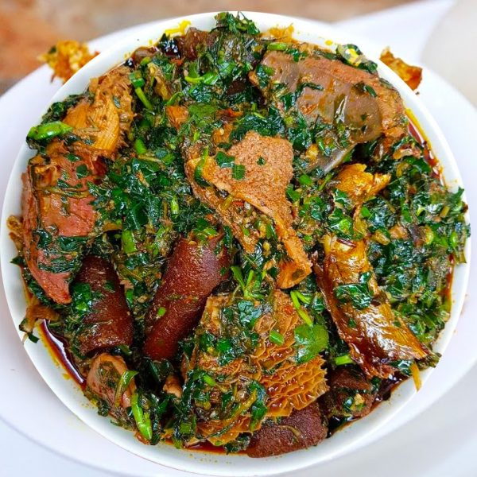

Afang Soup

Description
Afang soup is a tasty, nutritious Nigerian soup, native to the Efiks/Ibibios (Akwa Ibom & Cross river states).
Afang soup is one of the richest and somewhat medicinal vegetable soups of the Efiks/Ibibios in Nigeria. The Igbos’ have a similar soup known as Okazi soup.The only major difference is that a soup thickener is added to Okazi Soup to increase its viscosity(thickness), but afang soup gets its thickness from the bulk of vegetables used in preparing it.
Ingredients
- 200 gr beef or assorted meat(cow skin, shaki(tripe), etc)
- 20 gr Smoked fish
- Stock fish (optional)
- 1 handful Shelled Periwinkle(optional because some people don’t like periwinkles)
- 2 tablespoonful ground crayfish
- 500g Afang Leaves(same as okazi/ukazi leaves)(you can use the dry or fresh leaves)
- 1kg Water leaves(or lamb lettuce or Spinach as an alternative if you live outside Africa)
- 500 ml Palm oil
- 2 Stock cubes(maggi/knorr/onga or any one you have)
- Fresh pepper(scotch bonnet/atarodo) or ground dried pepper(to taste)
- Salt to taste
Steps
- Slice the water leaves and set aside. Slice Afang leaves, pound or blend it and set aside.
- Cook the assorted meat and stock fish with chopped onions, one stock cube/seasoning cube and salt to taste. Cook until tender.Then clean the dried fish in hot water,remove the bones and add the fish to the pot of cooked meat.
- Add the Palm oil, pepper, ground crayfish and remaining stock cube to the pot. Mix well and then add periwinkles (if you are using any). Cover the pot and leave to boil for about 10 minutes.
- After 10 minutes, add the Afang leaves, leave to simmer for 3 to 5 minutes and then add the water leaves.
- Add salt to taste , simmer for 2 minutes and your Afang Soup is ready..Enjoy.
Home